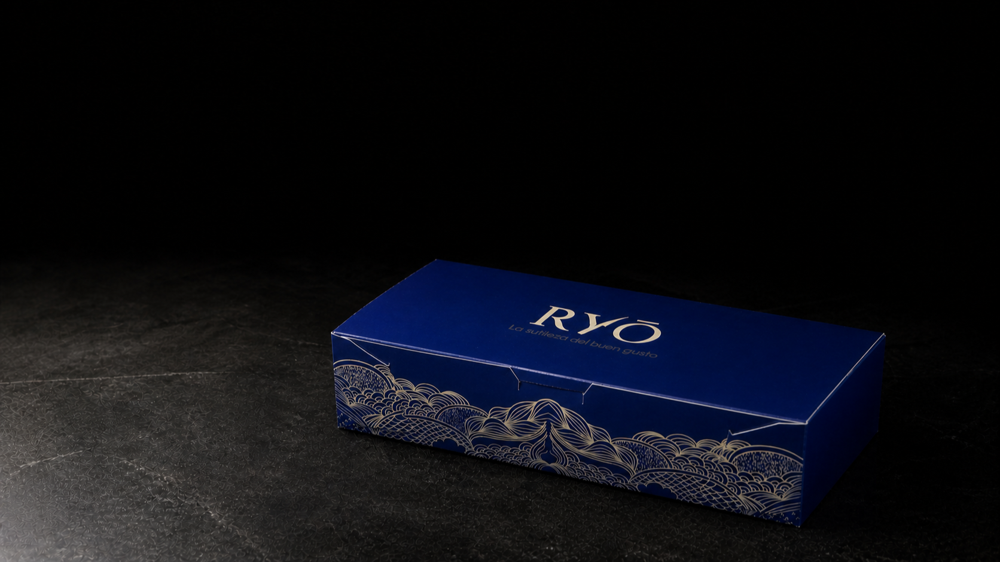
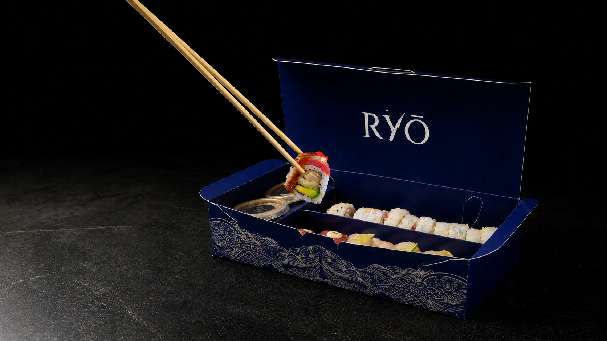
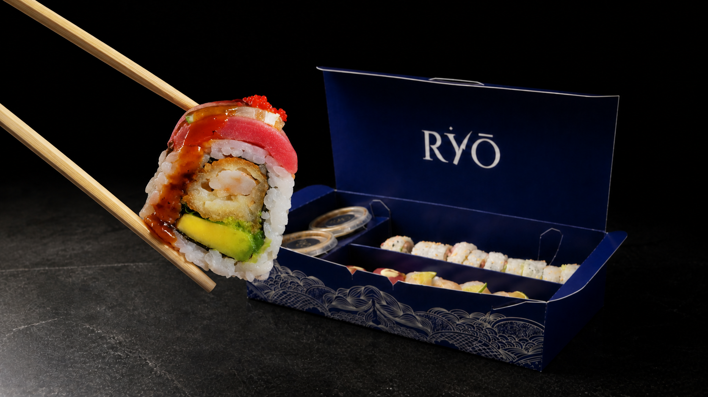
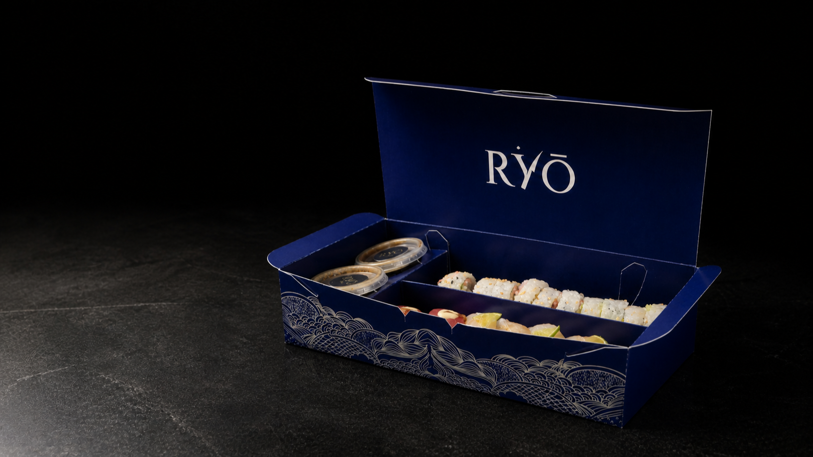
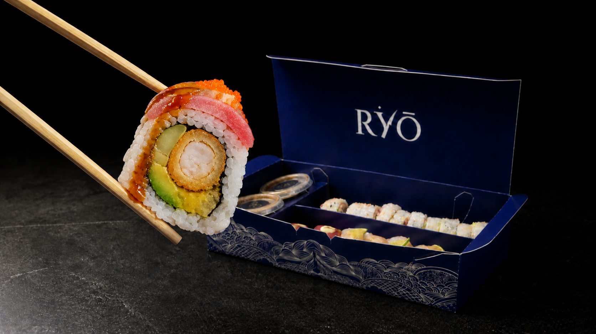
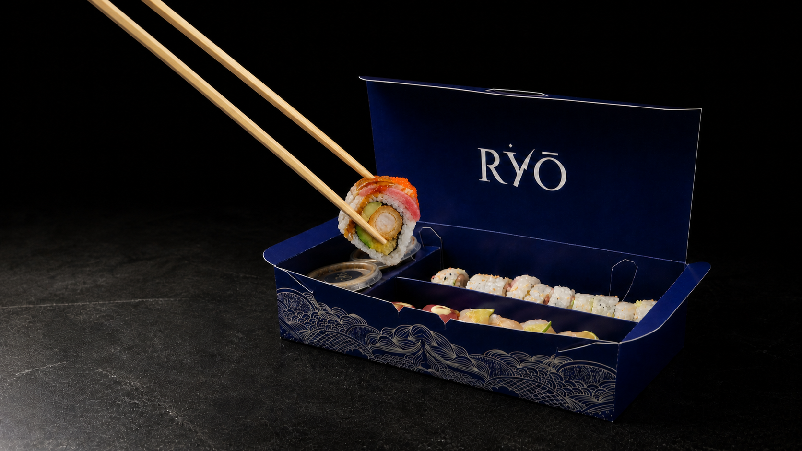
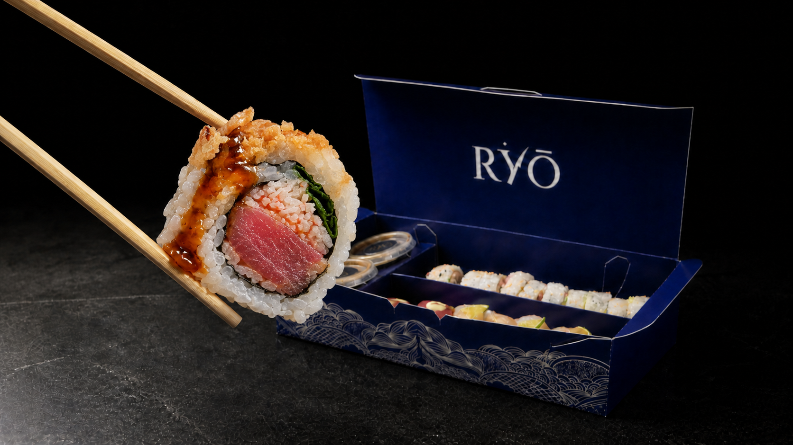
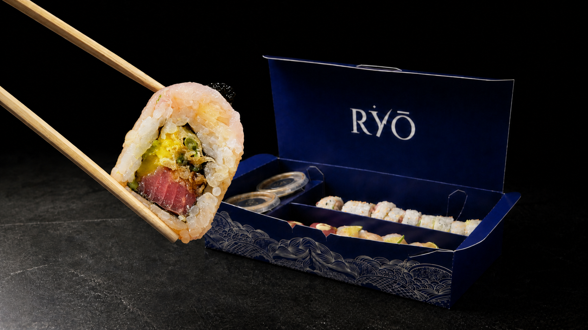

V01 · Entrada
Abrir, tomar, presentar
Un gesto continuo termina exactamente en la pose anatómica.



RYŌ Unboxed · Visual system 01
La caja RYŌ identificada abre la experiencia, sostiene cuatro anatomías, se convierte en mesa editorial y vuelve a cerrarla. No hay otra caja activa en esta revisión.
Objeto rector
Azul profundo, wordmark visible y el patrón físico continuo sobre el frente.
Esta es la única caja que pasa a la secuencia: misma geometría, tapa, divisores, logo interior y arte frontal en entrada, anatomía y salida.
Los masters siguen siendo conceptos generados a partir de SRC-014. Antes de producción pública se compararán con las fotografías físicas y se sustituirá cualquier detalle fino por material autorizado.

Fotogramas puente · No son anatomía
Un gesto continuo termina exactamente en la pose anatómica.



El último roll vuelve a la caja; K11 sostiene Experiencia antes del cierre final.


K16 y K17 solo explican el desplazamiento físico: por eso el roll aún está cerca de la caja. No se usarán para descripción ni producto destacado. K12–K15 son las únicas tomas anatómicas y conservan el roll grande en primer plano.
Tomas protagonistas · K12–K15
Estas cuatro imágenes —y solo estas— construyen la anatomía: corte grande, frontal y en primer plano. Selecciona un roll y pasa el cursor sobre cada ingrediente para revelar únicamente su línea y punto; con teclado, usa Tab. La caja permanece inmóvil mientras cambia la información.
Uramaki relleno de camarón crujiente, aguacate y cilantro, con topping de tuna, slice de limón y masago, bañado en salsa de anguila.

Uramaki relleno de cangrejo, tuna y cebollín, con topping de spicy tuna y cebolla frita, bañado en salsa de anguila.

Uramaki relleno de tuna, mango, cebollín frito, con topping de pescado blanco y masago, bañado en salsa ponzu con un toque de limón.
Uramaki relleno de camarón, aguacate y pepino, con topping de tuna y masago, bañado en salsa de anguila y spicy mayo.
Fuente factual: menú RYŌ, SRC-002, páginas 10–12, consultado el 26.08.2026. Cada roll usa un mapa de coordenadas propio sobre su imagen. “Ingrediente principal” es una jerarquía editorial propuesta a partir del primer relleno proteico de la descripción; no es una categoría declarada por el menú. En móvil, ingredientes y descripción pasan a lectura lineal.
Etapas de la toma anatómica
El roll completa el movimiento y descansa sin interfaz sobre la imagen.
El nombre aparece en la esquina superior derecha antes del detalle.
Las casillas permanecen visibles; cada línea y punto aparecen solo al explorar su ingrediente.
La interfaz se retira y el siguiente roll aparece mediante un fade corto.
05 · Experiencia · Formato propuesto
Después de guardar el último roll, el encuadre descansa en K11 con la caja abierta. Desaparece la interfaz anatómica y entra una capa editorial que explica la modalidad y los canales sin tapar el wordmark ni el patrón físico.
Los campos todavía no verificados se muestran como pendientes: forman parte del formato, pero no simulan información real.
Copy propuesto
Alta cocina japonesa para disfrutar en casa.
Una pausa editorial más serena que la anatomía: primero se entiende la propuesta; después aparecen los datos operativos.
Dato confirmado desde el perfil público de Ryo Sushi.
Canal confirmado; su jerarquía como CTA aún requiere aprobación.
Canal oficial registrado para consulta y contacto.
El espacio queda reservado hasta revisar el highlight vigente.
No se publican métodos ni condiciones sin una fuente actual.
Comportamiento de scroll
Nombre, casillas, líneas y puntos de la última anatomía desaparecen.
Playboy baja a la caja y el movimiento termina en el encuadre K11.
Entran titular, propuesta y datos verificados con una cadencia corta.
Los datos salen sin mover la caja; K11 enlaza con “Sobre nosotros”.
Fuente factual: inventario SRC-001 y confirmación directa registrada el 26.08.2026. “RYŌ llega a tu mesa” es copy editorial propuesto. Horarios y pagos permanecen explícitamente pendientes; no se muestran precios, tiempos de entrega ni procesos no confirmados.
Contrato audiovisual vigente
| Pieza | Inicio → fin | Movimiento | Uso |
|---|---|---|---|
| V01 · Entrada | K10 → K11 → K16 → K12 | Abrir, tomar una pieza, girar el corte y presentar. | Clip físico corto; termina en frame compatible con Sei. |
| I01–I04 · Anatomías | K12 → K13 → K14 → K15 | Fade out / fade in. Caja, lente, luz y pose permanecen bloqueados. | Imágenes por scroll; descripción y callouts en HTML. |
| V02 · Salida | K15 → K17 → K11 · pausa → K10 | Retirar anatomía, guardar la pieza, sostener Experiencia y cerrar al final. | Un único clip controlado por scroll; K11 funciona como hold editorial. |
El metraje sale sin texto, puntos, líneas ni UI. El wordmark y el patrón pertenecen físicamente a la caja y permanecen visibles.
Revisión visual actual
Confirmar ángulo, proporción, wordmark y patrón como base única de entrada y salida.
Revisar las coordenadas propias de cada roll y confirmar el ingrediente principal propuesto.
Sei Exclusive → Koga Explosion → Yuzu → Playboy se mantiene como recorrido.
Aprobar el formato de Experiencia y el hold K11; después detallamos V01 y V02 plano por plano.